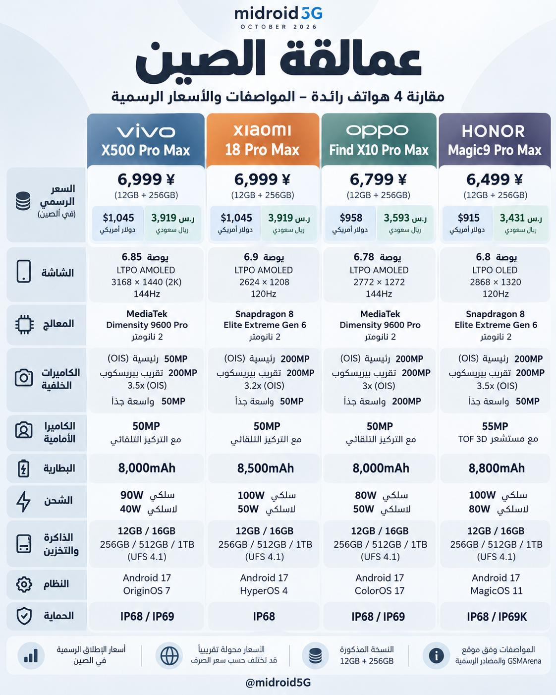

تقنية9 دقائق
أربعة فلاقشيب صينية تحت المجهر: ماذا تكشف تقييمات المستخدمين عن التجربة الفعلية؟
لم تعد المواصفات وحدها كافية للحكم على الهواتف الرائدة؛ فالأرقام المعلنة لا تكشف دائمًا عن تجربة الاستخدام اليومية، ومدى استقرار الأداء، ورضا الملاك بعد فترة من الاستخدام.
اقرأ المقال